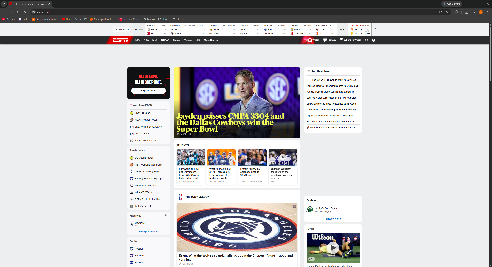

My Dev Tools Vandalism
I used browser developer tools to temporarily "vandalize" a website. Below is a screenshot showing my changes. These edits only appeared on my computer and did not affect the actual website.

What I "Vandalized"
I modified the ESPN homepage using the browser's developer tools. I changed the main headline to say, "Jayden passes CMPA 3304 and the Dallas Cowboys win the Super Bowl." I also changed the headline color from white to yellow and increased the font size to 40px. These changes helped me see how HTML controls the content on a webpage while CSS controls how that content looks. The changes were only temporary and disappeared when the page was refreshed.